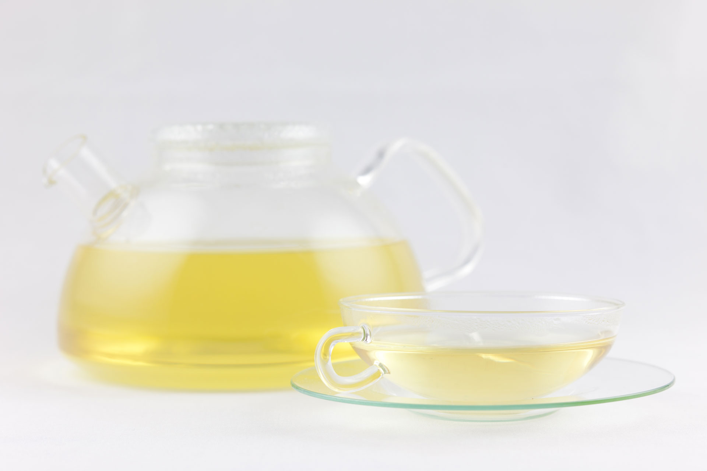
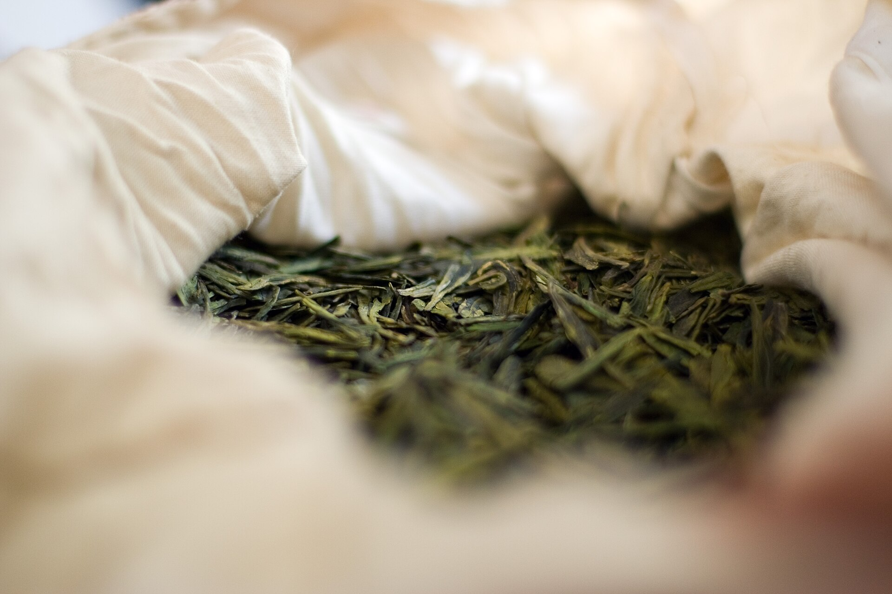
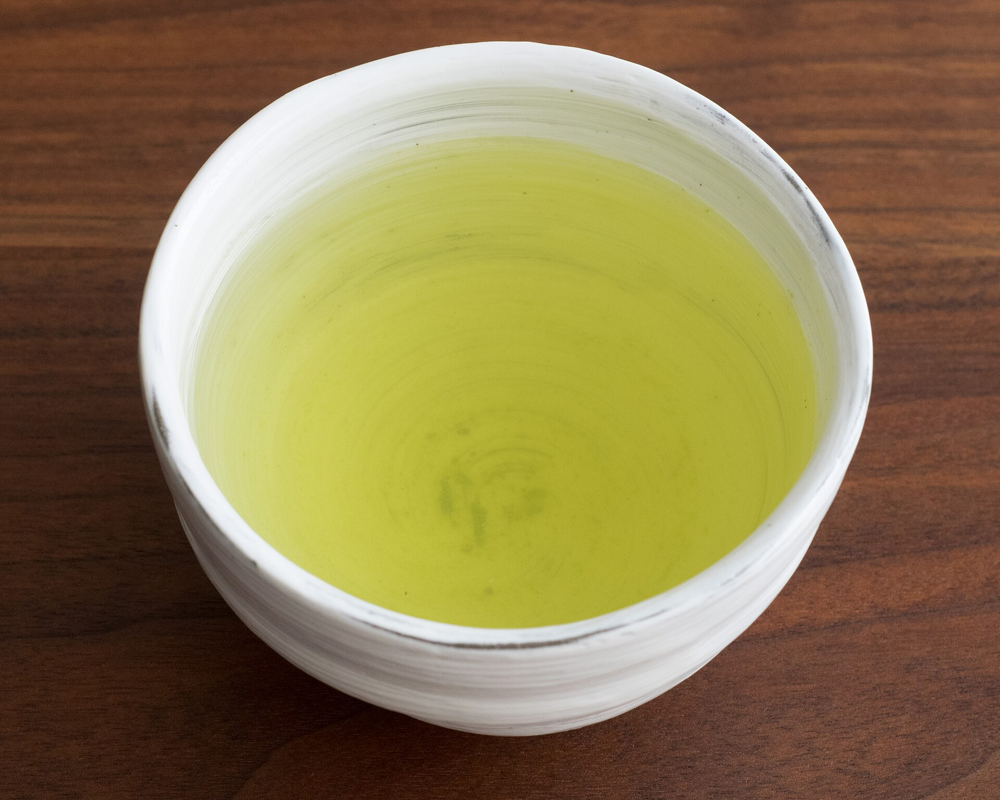

Лунцзин
Листовой зелёный чай · 50 г
Мягкие ореховые ноты и тёплое, округлое послевкусие.
3 900 ₸50 г · пачка
Зелёный чай DALA для неспешной чашки. Три сорта, понятный вкус и ни одного сложного правила.
Выбрать чайЛистовой чай · 50 г в пачке · Цены демонстрационные

White Monkey · прозрачный настой

Три сорта с разным характером. Загляните в лист, выберите вкус и соберите чайный набор.
Фотографии показывают реальные сорта. Магазин и цены — демо.Листовой зелёный чай · 50 г
Мягкие ореховые ноты и тёплое, округлое послевкусие.
3 900 ₸50 г · пачка

Листовой зелёный чай · 50 г
Свежие травяные ноты и лёгкая, чистая терпкость.
3 500 ₸50 г · пачка
Листовой зелёный чай · 50 г
Деликатный вкус, мягкая сладость и прозрачный настой.
4 200 ₸50 г · пачка
Начните с простого рецепта, а следующую чашку сделайте по своему вкусу.
Отмерьте чай и положите его в чайник.
Залейте горячей, но не кипящей водой.
Подождите 2–3 минуты. Попробуйте и найдите своё время.
Наша идея
Просто открыть пачку, заварить и попробовать. DALA — вымышленный бренд, созданный для этой демонстрационной витрины.
Собрать набор